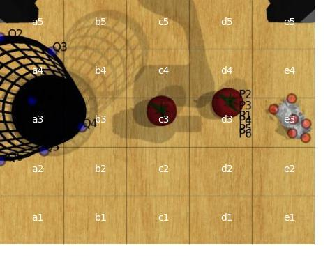
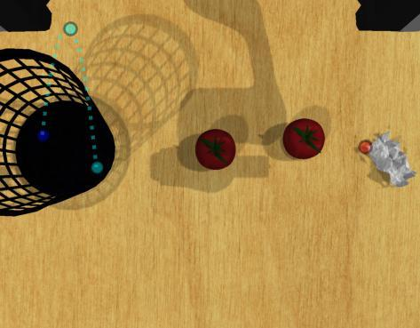
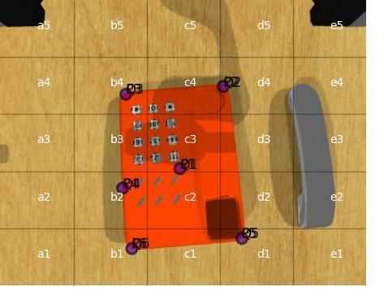
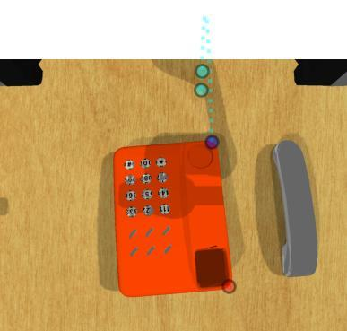

MOKA: VLM-based Keypoint Planning in Simulation
- Sim-to-Real Reverse Engineering: Independently ported the visual prompting framework MOKA (RSS 2024) from its original hardware-exclusive, ROS-dependent codebase into the RLBench physics simulator, establishing a rigorously reproducible baseline for VLM-driven manipulation.
- VLM-Simulation Bridge: Engineered a seamless pipeline connecting RLBench camera renders with the GPT-4V API, enabling the generation of Set-of-Mark visual prompts and the automated extraction of semantic "grasp" and "target" keypoints based on natural-language instructions.
- Benchmarking & Analysis: Successfully deployed this adapted framework to rigorously evaluate multi-step tasks, exposing the inherent limitations of 2D-pixel heuristics in complex contact dynamics, which directly motivated the architecture of our IROS 2026 submission (RADAR).


Move the crumpled paper into the trash can
Grasp crumpled paper at P3, target trash can at Q1, motion: downward


Move the phone onto its base
Failure case: grasp keypoints P5 incorrectly land on the base instead of the phone, highlighting the limitation of 2D visual prompting in ambiguous object boundaries.